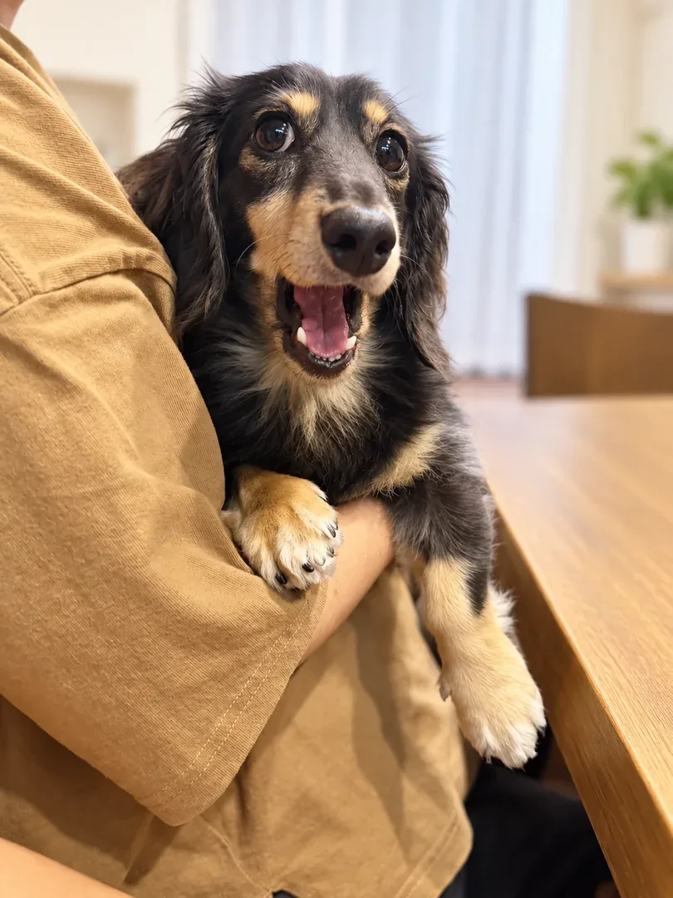
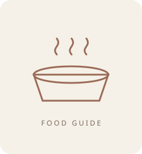

ラム・フィースト
主食／総合栄養食公式上の特徴：ラムを使うフリーズドライの主食候補。
合いやすい悩み：牛・鶏を避けて別の動物性原料を検討したい、少量で食いつきを確認したい。
口コミ傾向：食いつき、ふやかしやすさ、旅行への携帯性が挙がる一方、継続費用の高さも指摘。
犬種情報：公式な犬種指定はなし。口コミにはチワワ、トイプードル、柴犬、ジャックラッセルの使用例。犬種より原材料・体重・予算で判断。
ラムを避ける犬、療法食中は候補外。
本ページはプロモーション(広告)を含みます。紹介している宿・商品のリンクから予約・購入があると、運営者に紹介料が入ることがあります。

年齢を選ぶと、その年齢の主食をすべて載せたページへ移ります。犬種・体重・原材料・費用は、移った先の「条件を選ぶ」で足せます。主食とおやつは分けて載せています。
年齢から
用途・ブランドから
全 969 品を 1 ページで条件を重ねて絞り込むときは 全件のページ(読み込みに時間がかかります)。
場面を選んで、選び方を知って、条件を絞りましょう。
主食候補 925品(掲載カード数)。対象年齢・原材料・成分を比較。
K9 NATURAL 選び方ガイド
公式上の特徴：ラムを使うフリーズドライの主食候補。
合いやすい悩み：牛・鶏を避けて別の動物性原料を検討したい、少量で食いつきを確認したい。
口コミ傾向：食いつき、ふやかしやすさ、旅行への携帯性が挙がる一方、継続費用の高さも指摘。
犬種情報：公式な犬種指定はなし。口コミにはチワワ、トイプードル、柴犬、ジャックラッセルの使用例。犬種より原材料・体重・予算で判断。
ラムを避ける犬、療法食中は候補外。
公式上の特徴：ビーフを使うフリーズドライの主食候補。
合いやすい悩み：食べムラがあり、牛由来原料を問題なく食べられる犬の主食比較。
口コミ傾向：食いつきを評価する声が多いが、合わない例や価格負担もある。体調変化は個別体験で効果保証ではない。
犬種情報：公式な犬種指定はなし。トイプードル、ポメラニアン、チワワ、シニア犬の使用例。
牛由来原料を避ける犬、脂質・カロリー制限中は成分確認。
公式上の特徴：ラムとキングサーモンを主原料に含む。魚だけの単一たんぱく商品ではない。
合いやすい悩み：肉と魚を含む主食候補を比較したい。
口コミ傾向：ローテーション候補、食いつきに関する声がある。魚由来原料だけを求める用途には不適合。
犬種情報：公式な犬種指定はなし。犬種名よりラム・魚・卵など全原材料の適合で判断。
ラム、魚、卵など該当原料を避けている犬。
公式上の特徴：ラムの胃袋100％。主食ではなく、食事へのトッピングや間食向け。
合いやすい悩み：食が細い、いつものフードへの少量トッピングを試したい。
口コミ傾向：強い匂い、崩しやすさ、少量トッピングでの食いつきが多く語られる。匂いを負担に感じる飼い主もいる。
犬種情報：公式な犬種指定はなし。トイプードル、ポメラニアン、ボーダーコリーの使用例。
ラムを避ける犬、脂質制限中、主食の代用を探している場合。
公式上の特徴：牛の胃袋100％。ラム版より脂質・カロリーが高い商品表示。
合いやすい悩み：牛由来原料を食べられ、少量のトッピングや携帯おやつを比較したい。
口コミ傾向：ラムとのローテーション、食いつき、散歩用おやつとしての使用例。好みは個体差がある。
犬種情報：公式な犬種指定はなし。年齢・犬種より牛への適合と総摂取カロリーで判断。
牛由来原料を避ける犬、体重・脂質管理中。
「下痢が治る」「この種類なら必ず合う」とは判断できません。急な切替を避け、症状が続く場合は獣医師へ。根拠：K9Natural取扱商品情報、K9ナチュラル公式案内
絞り込みは任意です
ランキングではありません。公式情報と商品表示を基に、比較しやすい候補をまとめています。
好きな食材、食べやすさ、続けやすさ。条件を重ねて、主食候補を見つけましょう。
購入する袋・セットの合計量と価格、公式給与表で確認した1日量を入力してください。
月あたりは30日間に食べる量の費用です。袋単位の購入額・送料・割引とは異なります。フリーズドライは戻す前の重量でそろえてください。公式・正規取扱情報を商品の用途と原材料の根拠にし、購入者レビューは使用例として分離しています。食物アレルギーは全原材料を確認し、治療中の食事は獣医師に相談してください。
このページには、各カテゴリから 6 品ずつ、計 48 品を載せています。上のボタンで用途を選ぶと、その用途のページか全件のページへ移ります。検索欄と詳しい条件はこの 48 品が対象です。すべては 全件のページ で探せます。
公式表示に基づくドライタイプの総合栄養食。原材料の表示順と対象年齢で比較できます。
ユーカヌバ スモール パピー 12ヶ月まで 子犬用・小型犬用 2.7kg（11100051）※お一人様5個まで
公式仕様確認：2026-09-27。価格・在庫確認：2026-09-27（楽天市場）。ドライとウェットは水分量が異なるため、成分の％をそのまま優劣の比較に使わないでください。
対象年齢・体格、全原材料表示、給与量と切替方法を確認してください。原材料名だけでアレルギーへの適合は判断できません。療法食の代用にはしないでください。
公式表示に基づくドライタイプの総合栄養食。原材料の表示順と対象年齢で比較できます。
ユーカヌバ ラージ パピー 24ヶ月まで 子犬用・大型犬用 7.5kg（11100054）※お一人様5個まで
公式仕様確認：2026-09-27。価格・在庫確認：2026-09-27（楽天市場）。ドライとウェットは水分量が異なるため、成分の％をそのまま優劣の比較に使わないでください。
対象年齢・体格、全原材料表示、給与量と切替方法を確認してください。原材料名だけでアレルギーへの適合は判断できません。療法食の代用にはしないでください。
公式表示に基づくドライタイプの総合栄養食。原材料表示の先頭は「ラム肉」。
ユーカヌバ パピー ラム&ライス 12ヶ月まで 子犬用 全犬種用 7.5kg （11100127）※お一人様5個まで
公式仕様確認：2026-09-27。価格・在庫確認：2026-09-27（楽天市場）。ドライとウェットは水分量が異なるため、成分の％をそのまま優劣の比較に使わないでください。
対象年齢・体格、全原材料表示、給与量と切替方法を確認してください。原材料名だけでアレルギーへの適合は判断できません。療法食の代用にはしないでください。
公式表示に基づくドライタイプの総合栄養食。原材料表示の先頭は「オーガニックチキン生肉」。
ソルビダ グレインフリー チキン 室内飼育子犬用 1.8kg ドッグフード オーガニック
公式仕様確認：2026-09-27。価格・在庫確認：2026-09-27（楽天市場）。ドライとウェットは水分量が異なるため、成分の％をそのまま優劣の比較に使わないでください。
対象年齢・体格、全原材料表示、給与量と切替方法を確認してください。原材料名だけでアレルギーへの適合は判断できません。療法食の代用にはしないでください。
公式表示に基づくドライタイプの総合栄養食。原材料表示の先頭は「骨抜きチキン」。
ウェルネス 穀物不使用 子犬用・離乳期から1歳 骨抜きチキン 1.8kg WELLNESS 犬 ドッグフード ドライフード グレインフリー
公式仕様確認：2026-09-27。価格・在庫確認：2026-09-27（楽天市場）。ドライとウェットは水分量が異なるため、成分の％をそのまま優劣の比較に使わないでください。
対象年齢・体格、全原材料表示、給与量と切替方法を確認してください。原材料名だけでアレルギーへの適合は判断できません。療法食の代用にはしないでください。
公式表示に基づくドライタイプの総合栄養食。原材料表示の先頭は「フレッシュチキン」。
特別クーポン おまけ付き アーテミス フレッシュミックス スモールブリード パピー 小粒 3kg 3キロ 小型犬 幼犬用 離乳期〜12ヶ月以下 対応 ドッグフード 犬 イヌ 幼犬 ペット 健康 仔犬 母犬 プレミアムフード
公式仕様確認：2026-09-27。価格・在庫確認：2026-09-27（楽天市場）。ドライとウェットは水分量が異なるため、成分の％をそのまま優劣の比較に使わないでください。
対象年齢・体格、全原材料表示、給与量と切替方法を確認してください。原材料名だけでアレルギーへの適合は判断できません。療法食の代用にはしないでください。
公式表示に基づくドライタイプの総合栄養食。原材料表示の先頭は「オーガニックチキン生肉」。
ソルビダ グレインフリー チキン 室内飼育 成犬用 1.8kg 送料無料
公式仕様確認：2026-09-27。価格・在庫確認：2026-09-27（楽天市場）。ドライとウェットは水分量が異なるため、成分の％をそのまま優劣の比較に使わないでください。
対象年齢・体格、全原材料表示、給与量と切替方法を確認してください。原材料名だけでアレルギーへの適合は判断できません。療法食の代用にはしないでください。
公式表示に基づくドライタイプの総合栄養食。原材料表示の先頭は「チキン」。
プロプラン ドッグ 小型犬/成犬用 チキン 2.5kg 筋肉バランスのサポートピュリナ プロプラン ドッグフード ドライフード
公式仕様確認：2026-09-27。価格・在庫確認：2026-09-27（楽天市場）。ドライとウェットは水分量が異なるため、成分の％をそのまま優劣の比較に使わないでください。
対象年齢・体格、全原材料表示、給与量と切替方法を確認してください。原材料名だけでアレルギーへの適合は判断できません。療法食の代用にはしないでください。
公式表示に基づくドライタイプの総合栄養食。原材料表示の先頭は「フレッシュチキン」。
フレッシュミックス スモールブリード アダルト(3kg)【アーテミス フレッシュミックス】
公式仕様確認：2026-09-27。価格・在庫確認：2026-09-27（楽天市場）。ドライとウェットは水分量が異なるため、成分の％をそのまま優劣の比較に使わないでください。
対象年齢・体格、全原材料表示、給与量と切替方法を確認してください。原材料名だけでアレルギーへの適合は判断できません。療法食の代用にはしないでください。
公式表示に基づくドライタイプの総合栄養食。原材料表示の先頭は「白身魚†」。
最安値に挑戦中ウェルネス コア (高たんぱく質・穀物不使用) 成犬用 (1〜6歳) オーシャンフィッシュ 5.4kg【送料無料】【本州・九州・四国限定】成犬 オーシャン フィッシュ
公式仕様確認：2026-09-27。価格・在庫確認：2026-09-27（楽天市場）。ドライとウェットは水分量が異なるため、成分の％をそのまま優劣の比較に使わないでください。
対象年齢・体格、全原材料表示、給与量と切替方法を確認してください。原材料名だけでアレルギーへの適合は判断できません。療法食の代用にはしないでください。
公式表示に基づくドライタイプの総合栄養食。原材料表示の先頭は「骨抜き七面鳥」。
クーポンで最安値特別限定価格 限定5本ウェルネス コア (高たんぱく質・穀物不使用)小型犬 成犬用 (1〜6歳) 骨抜き七面鳥5.4kg【送料無料】 【本州・九州・四国限定】小型犬 成犬
公式仕様確認：2026-09-27。価格・在庫確認：2026-09-27（楽天市場）。ドライとウェットは水分量が異なるため、成分の％をそのまま優劣の比較に使わないでください。
対象年齢・体格、全原材料表示、給与量と切替方法を確認してください。原材料名だけでアレルギーへの適合は判断できません。療法食の代用にはしないでください。
公式表示に基づくドライタイプの総合栄養食。原材料表示の先頭は「骨抜き七面鳥」。
ウェルネス シンプル 全犬種用 成犬用 1歳以上用 骨抜き七面鳥＆じゃがいも 1.8kg WELLNESS 犬 ドッグフード ドライフード グレインフリー
公式仕様確認：2026-09-27。価格・在庫確認：2026-09-27（楽天市場）。ドライとウェットは水分量が異なるため、成分の％をそのまま優劣の比較に使わないでください。
対象年齢・体格、全原材料表示、給与量と切替方法を確認してください。原材料名だけでアレルギーへの適合は判断できません。療法食の代用にはしないでください。
公式表示に基づくドライタイプの総合栄養食。原材料の表示順と対象年齢で比較できます。
ユーカヌバ スモール シニア 7歳以上 シニア用・小型犬用 2.7kg（11100064）※お一人様5個まで
公式仕様確認：2026-09-27。価格・在庫確認：2026-09-27（楽天市場）。ドライとウェットは水分量が異なるため、成分の％をそのまま優劣の比較に使わないでください。
対象年齢・体格、全原材料表示、給与量と切替方法を確認してください。原材料名だけでアレルギーへの適合は判断できません。療法食の代用にはしないでください。
公式表示に基づくドライタイプの総合栄養食。原材料の表示順と対象年齢で比較できます。
ユーカヌバ ミディアム シニア 7歳以上 シニア用・中型犬用 13.5kg（11100068）※お一人様5個まで
公式仕様確認：2026-09-27。価格・在庫確認：2026-09-27（楽天市場）。ドライとウェットは水分量が異なるため、成分の％をそのまま優劣の比較に使わないでください。
対象年齢・体格、全原材料表示、給与量と切替方法を確認してください。原材料名だけでアレルギーへの適合は判断できません。療法食の代用にはしないでください。
公式表示に基づくドライタイプの総合栄養食。原材料表示の先頭は「ラム肉」。
ユーカヌバ ラム＆ライス 全犬種 シニア用 7歳以上 7.5kg〔26080520dd〕〔26070534dd〕
公式仕様確認：2026-09-27。価格・在庫確認：2026-09-27（楽天市場）。ドライとウェットは水分量が異なるため、成分の％をそのまま優劣の比較に使わないでください。
対象年齢・体格、全原材料表示、給与量と切替方法を確認してください。原材料名だけでアレルギーへの適合は判断できません。療法食の代用にはしないでください。
公式表示に基づくドライタイプの総合栄養食。原材料表示の先頭は「オーガニックチキン生肉」。
ソルビダ グレインフリー チキン 室内飼育 7歳以上用 1.8kg 送料無料
公式仕様確認：2026-09-27。価格・在庫確認：2026-09-27（楽天市場）。ドライとウェットは水分量が異なるため、成分の％をそのまま優劣の比較に使わないでください。
対象年齢・体格、全原材料表示、給与量と切替方法を確認してください。原材料名だけでアレルギーへの適合は判断できません。療法食の代用にはしないでください。
公式表示に基づくドライタイプの総合栄養食。原材料表示の先頭は「骨抜き七面鳥」。
最安値に挑戦中ウェルネス コア (高たんぱく質・穀物不使用)高齢犬用 (7歳以上) 骨抜き七面鳥 5.4kg 【送料無料】【本州・九州・四国限定】高齢犬
公式仕様確認：2026-09-27。価格・在庫確認：2026-09-27（楽天市場）。ドライとウェットは水分量が異なるため、成分の％をそのまま優劣の比較に使わないでください。
対象年齢・体格、全原材料表示、給与量と切替方法を確認してください。原材料名だけでアレルギーへの適合は判断できません。療法食の代用にはしないでください。
公式表示に基づくドライタイプの総合栄養食。原材料表示の先頭は「骨抜きチキン」。
ウェルネス コアダイジェスティブヘルス エイジング 骨抜きチキン＆玄米 1.8kg 高齢犬用 シニア犬用 全犬種用 7歳以上 ドッグフード ドライフード WELLNESS 正規品
公式仕様確認：2026-09-27。価格・在庫確認：2026-09-27（楽天市場）。ドライとウェットは水分量が異なるため、成分の％をそのまま優劣の比較に使わないでください。
販売店ページの成分表示が、メーカー公式の現行の数値と異なることを確認しています（2026-09-27）。カードの数値は公式表示です。購入時は届いた現物の表示を確認してください。
対象年齢・体格、全原材料表示、給与量と切替方法を確認してください。原材料名だけでアレルギーへの適合は判断できません。療法食の代用にはしないでください。
公式表示に基づくドライタイプの総合栄養食。原材料表示の先頭は「オーガニックターキー生肉」。
10%OFFクーポン ソルビダ グレインフリー ターキー 室内飼育 全年齢用 1.8kg 1.8キロ ドッグフード 犬 栄養 栄養食 健康維持 健康 成犬 運動不足 カロリー控えめ オーガニック 犬 グレインフリー 穀物不使用 ドッグ フード
公式仕様確認：2026-09-27。価格・在庫確認：2026-09-27（楽天市場）。ドライとウェットは水分量が異なるため、成分の％をそのまま優劣の比較に使わないでください。
対象年齢・体格、全原材料表示、給与量と切替方法を確認してください。原材料名だけでアレルギーへの適合は判断できません。療法食の代用にはしないでください。
公式表示に基づくドライタイプの総合栄養食。原材料表示の先頭は「骨抜きチキン」。
ウェルネスコア (高たんぱく質・穀物不使用) 小型犬全年齢用 骨抜きチキン 1.8kg【アダルト/成犬/ドッグフード/ペットフード/小型犬/グレインフリー/穀物不使用】
公式仕様確認：2026-09-27。価格・在庫確認：2026-09-27（楽天市場）。ドライとウェットは水分量が異なるため、成分の％をそのまま優劣の比較に使わないでください。
販売店ページの成分表示が、メーカー公式の現行の数値と異なることを確認しています（2026-09-27）。カードの数値は公式表示です。購入時は届いた現物の表示を確認してください。
対象年齢・体格、全原材料表示、給与量と切替方法を確認してください。原材料名だけでアレルギーへの適合は判断できません。療法食の代用にはしないでください。
公式表示に基づくドライタイプの総合栄養食。原材料表示の先頭は「フレッシュチキン」。
【要エントリー!9/30まで最大10万ポイント当たる】アーテミス アガリクスI/S 小粒 6.8kg×2個＋選べるおまけ付き ドッグ ドック 犬 ペット 幼犬 仔犬 パピー 子犬 成犬 アダルト 高齢犬 シニア 老犬 シニア犬 イミューン【D】
公式仕様確認：2026-09-27。価格・在庫確認：2026-09-27（楽天市場）。ドライとウェットは水分量が異なるため、成分の％をそのまま優劣の比較に使わないでください。
対象年齢・体格、全原材料表示、給与量と切替方法を確認してください。原材料名だけでアレルギーへの適合は判断できません。療法食の代用にはしないでください。
公式表示に基づくドライタイプの総合栄養食。原材料表示の先頭は「フレッシュサーモン」。
(各種クーポン有)アーテミス オソピュア グレインフリー サーモン＆ガルバンゾー 【中粒】4.5kg (選べるプレゼント付)【正規品】ドッグフード グレインフリー 穀物不使用 成犬 幼犬 高齢犬 シニア犬
公式仕様確認：2026-09-27。価格・在庫確認：2026-09-27（楽天市場）。ドライとウェットは水分量が異なるため、成分の％をそのまま優劣の比較に使わないでください。
対象年齢・体格、全原材料表示、給与量と切替方法を確認してください。原材料名だけでアレルギーへの適合は判断できません。療法食の代用にはしないでください。
公式表示に基づくドライタイプの総合栄養食。原材料表示の先頭は「フレッシュダック」。
アーテミス オソピュア ダック＆ガルバンゾー ドッグフード 4.5kg グレインフリー ARTEMIS【正規品】
公式仕様確認：2026-09-27。価格・在庫確認：2026-09-27（楽天市場）。ドライとウェットは水分量が異なるため、成分の％をそのまま優劣の比較に使わないでください。
対象年齢・体格、全原材料表示、給与量と切替方法を確認してください。原材料名だけでアレルギーへの適合は判断できません。療法食の代用にはしないでください。
公式表示に基づくドライタイプの総合栄養食。原材料の表示順と対象年齢で比較できます。
ビタワン 6.5kg
公式仕様確認：2026-09-27。価格・在庫確認：2026-09-27（楽天市場）。ドライとウェットは水分量が異なるため、成分の％をそのまま優劣の比較に使わないでください。
対象年齢・体格、全原材料表示、給与量と切替方法を確認してください。原材料名だけでアレルギーへの適合は判断できません。療法食の代用にはしないでください。
公式表示に基づくドライタイプの総合栄養食。原材料表示の先頭は「オーガニックチキン生肉」。
【送料無料(北海道・沖縄は除く)】ソルビダ グレインフリー チキン 室内飼育体重管理用 5．8kg
公式仕様確認：2026-09-27。価格・在庫確認：2026-09-27（楽天市場）。ドライとウェットは水分量が異なるため、成分の％をそのまま優劣の比較に使わないでください。
対象年齢・体格、全原材料表示、給与量と切替方法を確認してください。原材料名だけでアレルギーへの適合は判断できません。療法食の代用にはしないでください。
公式表示に基づくドライタイプの総合栄養食。原材料表示の先頭は「フレッシュチキン」。
【クーポン配布中】アーテミス フレッシュミックス ウェイトマネージメント＆スモールシニアドッグ【賞味期限 2027-06-06】
公式仕様確認：2026-09-27。価格・在庫確認：2026-09-27（楽天市場）。ドライとウェットは水分量が異なるため、成分の％をそのまま優劣の比較に使わないでください。
対象年齢・体格、全原材料表示、給与量と切替方法を確認してください。原材料名だけでアレルギーへの適合は判断できません。療法食の代用にはしないでください。
公式表示に基づくドライタイプの総合栄養食。原材料の表示順と対象年齢で比較できます。
ナウフレッシュ 9.98kg 中粒 レギュラー粒 犬 ドッグフード ドライ シニア&ウェイトマネジメント シニア ライト 体重管理 シニアドッグフード ライトドッグフード シニア犬 中型犬 大型犬 犬 ドッグ フード 総合栄養食 グレインフリー (9.98kg) NOW Fresh senior grain-free
公式仕様確認：2026-09-27。価格・在庫確認：2026-09-27（楽天市場）。ドライとウェットは水分量が異なるため、成分の％をそのまま優劣の比較に使わないでください。
対象年齢・体格、全原材料表示、給与量と切替方法を確認してください。原材料名だけでアレルギーへの適合は判断できません。療法食の代用にはしないでください。
公式表示に基づくドライタイプの総合栄養食。原材料の表示順と対象年齢で比較できます。
ドッグフード ナウフレッシュ 犬 グレインフリー スモールブリードシニア＆ウェイトマネジメント 800g ミールフリー 超小粒 成犬用 総合栄養食 低脂肪 人工保存料 人工香料 着色料 無添加 ドライ ペットキュリアン ドック *
公式仕様確認：2026-09-27。価格・在庫確認：2026-09-27（楽天市場）。ドライとウェットは水分量が異なるため、成分の％をそのまま優劣の比較に使わないでください。
対象年齢・体格、全原材料表示、給与量と切替方法を確認してください。原材料名だけでアレルギーへの適合は判断できません。療法食の代用にはしないでください。
主原料はトウモロコシ、小麦、トリ肉。7歳以上の肥満傾向の高齢犬向けで、粒サイズは直径約7.5〜9.5mm。
ドッグフード サイエンスダイエット シニアライト ７歳以上 小粒 肥満傾向の高齢犬用 チキン １２ｋｇ ヒルズ 犬
販売店の商品表示を確認：2026-09-28（メーカー公式ページは未確認。購入前に公式の最新表示も確認してください）。価格・在庫確認：2026-09-28（Yahoo!ショッピング）。ドライとウェットは水分量が異なるため、成分の％をそのまま優劣の比較に使わないでください。
対象年齢・体格、全原材料表示、給与量と切替方法を確認してください。原材料名だけでアレルギーへの適合は判断できません。療法食の代用にはしないでください。
主原料はトウモロコシとトリ肉。1歳以上の肥満傾向の成犬向けで、粒サイズは直径7-9mm。
ヒルズ サイエンスダイエット ドッグフード アダルトライト 小粒 １歳以上 チキン １２ｋｇ 成犬 肥満 ドライ
販売店の商品表示を確認：2026-09-28（メーカー公式ページは未確認。購入前に公式の最新表示も確認してください）。価格・在庫確認：2026-09-28（Yahoo!ショッピング）。ドライとウェットは水分量が異なるため、成分の％をそのまま優劣の比較に使わないでください。
対象年齢・体格、全原材料表示、給与量と切替方法を確認してください。原材料名だけでアレルギーへの適合は判断できません。療法食の代用にはしないでください。

シニア期の健康維持を考えた『モグワン』のシニア用。公式サイトからの購入は A8.net 提携プログラムです。
用途: 要確認。公式の商品ページの用途表示を確認できていないため、主食の候補には含めていません。主食にする前に、パッケージの「総合栄養食」表示を確認してください。
メーカー: 株式会社レティシアン（A8.net プログラム「モグワンドッグフード シニア用」）。対象年齢・原材料・給与量・定期購入の条件は公式サイトで確認。他社製品との比較表現は行いません。
対象年齢・体格、全原材料表示、給与量と切替方法を公式サイトで確認してください。総合栄養食か一般食かは商品ごとの表示で判断してください。療法食の代用にはしないでください。
国産・無添加のウェット／フリーズドライのフードシリーズ。お試しアソートセット（腸・ヘルスケア for DOGS）やフリーズドライ（まぐろ）があり、旅行の携行食候補にも。
メーカー: 株式会社Paw's Green（A8.net プログラム「PAW'S GREEN DELI」）。総合栄養食か一般食かは商品ごとの表示を公式サイトで確認。価格・内容量・定期条件は公式サイト。
対象年齢・体格、全原材料表示、給与量と切替方法を公式サイトで確認してください。総合栄養食か一般食かは商品ごとの表示で判断してください。療法食の代用にはしないでください。
英国発の自然素材ドッグフード『Barking Heads』。輸入元 Treats Factory の公式サイトで購入できます（A8.net 提携プログラム）。
用途: 要確認。ブランド全体の案内で、商品ごとの用途表示を確認できていないため、主食の候補には含めていません。主食にする前に、パッケージの「総合栄養食」表示を確認してください。
輸入元: 株式会社ネイチャーリンクス Treats Factory（A8.net プログラム）。対象年齢・総合栄養食表示・原材料・給与量は公式サイトの商品ページで確認。
対象年齢・体格、全原材料表示、給与量と切替方法を公式サイトで確認してください。総合栄養食か一般食かは商品ごとの表示で判断してください。療法食の代用にはしないでください。
毎日のごはんにかける犬用オメガ3オイル。主食ではなくトッピング用のサプリメントとして。公式通販は A8.net 提携プログラムです。
販売: 株式会社ミクロブストジャパン（A8.net プログラム「クジラオイル公式通販」）。給与量・保存方法・定期プランの条件は公式サイトで確認。効果を保証する表現はしません。
対象年齢・体格、全原材料表示、給与量と切替方法を公式サイトで確認してください。総合栄養食か一般食かは商品ごとの表示で判断してください。療法食の代用にはしないでください。

フリーズドライタイプ。主食かトリーツか、原材料、戻し方、給与量を商品単位で確認しやすい。
【ケーナインナチュラル】K9ナチュラル フリーズドライ ラム・グリーントライプ 200g【正規品 フリーズドライフード 犬用】
【ケーナインナチュラル】K9ナチュラル フリーズドライ ラム・グリーントライプ 200g【正規品 フリーズドライフード 犬用】
お腹の不調を治す商品ではありません。切替は少量から行い、体調不良時は獣医師へ。
レビューは使用例として確認し、仕様・原材料は商品表示を優先しています。
広告｜楽天市場で価格・在庫を確認
原材料数が少ない商品は比較しやすい。携帯性、割りやすさ、カロリーも確認。
ひとくちサーモン 30g◆北海道産 犬 おやつ 無添加 国産 犬猫のおやつシズカ sizuka エゾマルシェ ドッグフード ペット 好き 手作り 鮭 ジャーキー 鮭 ノーズワーク 知育玩具
ひとくちサーモン 30g◆北海道産 犬 おやつ 無添加 国産 犬猫のおやつシズカ sizuka エゾマルシェ ドッグフード ペット 好き 手作り 鮭 ジャーキー 鮭 ノーズワーク 知育玩具
無添加の範囲を表示で確認。間食は主食量と総カロリーを調整してください。
レビューは使用例として確認し、仕様・原材料は商品表示を優先しています。
広告｜楽天市場で価格・在庫を確認鶏肉、鶏ささみ、鶏レバーを主原料とする国産の総合栄養食。生後3ヶ月以上の全犬種対象で、保存料・着色料は無添加。
送料無料 デビフ ささみ＆レバーミンチ １５０ｇ ２４缶 缶詰 犬 ウェットフード ドッグフード
販売店の商品表示を確認：2026-09-28（メーカー公式ページは未確認。購入前に公式の最新表示も確認してください）。価格・在庫確認：2026-09-28（Yahoo!ショッピング）。ドライとウェットは水分量が異なるため、成分の％をそのまま優劣の比較に使わないでください。
対象年齢・体格、全原材料表示、給与量と切替方法を確認してください。原材料名だけでアレルギーへの適合は判断できません。療法食の代用にはしないでください。
主原料はコーンと肉類(鶏、七面鳥)で小麦を含む。生後10ヶ月以上の避妊・去勢小型犬用の総合栄養食。
正規品 ロイヤルカナン 犬ドライ ミニ ステアライズド 4kg 避妊・去勢犬用 小型犬用 成犬〜高齢犬用(生後10ヵ月以上) 太りやすい 体重管理 CCN
公式仕様確認：2026-09-28。価格・在庫確認：2026-09-28（Yahoo!ショッピング）。ドライとウェットは水分量が異なるため、成分の％をそのまま優劣の比較に使わないでください。
対象年齢・体格、全原材料表示、給与量と切替方法を確認してください。原材料名だけでアレルギーへの適合は判断できません。療法食の代用にはしないでください。
主原料はラム(肉)で、穀物を使わないレシピです。原産国はアメリカです。
【セット販売】ニュートロ ワイルド レシピ ラム 4kg×3コ
販売店の商品表示を確認：2026-09-28（メーカー公式ページは未確認。購入前に公式の最新表示も確認してください）。価格・在庫確認：2026-09-28（Yahoo!ショッピング）。ドライとウェットは水分量が異なるため、成分の％をそのまま優劣の比較に使わないでください。
対象年齢・体格、全原材料表示、給与量と切替方法を確認してください。原材料名だけでアレルギーへの適合は判断できません。療法食の代用にはしないでください。
主原料はチキン(肉)で、穀物を使わない総合栄養食。原産国はアメリカ。
【セット販売】ニュートロ ワイルド レシピ チキン 4kg×3コ
販売店の商品表示を確認：2026-09-28（メーカー公式ページは未確認。購入前に公式の最新表示も確認してください）。価格・在庫確認：2026-09-28（Yahoo!ショッピング）。ドライとウェットは水分量が異なるため、成分の％をそのまま優劣の比較に使わないでください。
対象年齢・体格、全原材料表示、給与量と切替方法を確認してください。原材料名だけでアレルギーへの適合は判断できません。療法食の代用にはしないでください。
主原料は肉類(チキン、鶏レバー、ビーフなど)と小麦粉。総合栄養食のウェットフードで、角切りビーフに緑黄色野菜入り。
愛犬元気 缶 角切りビーフに緑黄色野菜入り ( 375g*24缶セット )/ 愛犬元気 ( ドッグフード )
販売店の商品表示を確認：2026-09-28（メーカー公式ページは未確認。購入前に公式の最新表示も確認してください）。価格・在庫確認：2026-09-28（Yahoo!ショッピング）。ドライとウェットは水分量が異なるため、成分の％をそのまま優劣の比較に使わないでください。
対象年齢・体格、全原材料表示、給与量と切替方法を確認してください。原材料名だけでアレルギーへの適合は判断できません。療法食の代用にはしないでください。
鶏肉と緑黄色野菜を主原料とした主食用ウェットフード。穀物不使用で、関節や皮膚の健康に配慮した素材を含んでいる。
いなば 犬用ちゅ〜るごはん 総合栄養食 緑黄色野菜バラエティ 14g×40本 いなばペットフード 返品種別B
販売店の商品表示を確認：2026-09-28（メーカー公式ページは未確認。購入前に公式の最新表示も確認してください）。価格・在庫確認：2026-09-28（Yahoo!ショッピング）。ドライとウェットは水分量が異なるため、成分の％をそのまま優劣の比較に使わないでください。
対象年齢・体格、全原材料表示、給与量と切替方法を確認してください。原材料名だけでアレルギーへの適合は判断できません。療法食の代用にはしないでください。

犬種に合わせたライン。生後10ヵ月齢以上。ウェットタイプ。主な原材料は肉類（鶏、豚）、コーンスターチ、セルロース。
ロイヤルカナン ウェット ダックスフンド 85g お一人様5点限り 関東当日便
仕様確認：2026-09-21／価格・在庫確認：2026-09-21。ドライとウェットは水分量が異なるため、成分の％をそのまま優劣の比較に使わないでください。
食べる量と切り替え方は公式給与表を確認。避けたい原材料は全原材料欄で確認し、症状がある犬は獣医師へ相談してください。
レビューは使用例として確認し、仕様・原材料は商品表示を優先しています。
広告｜楽天市場で価格・在庫を確認
犬種に合わせたライン。白く柔らかい被毛を持つマルチーズ。ドライタイプ。主な原材料は米、肉類（鶏、七面鳥、ダック）、コーン。
ロイヤルカナン BHN マルチーズ 成犬〜高齢犬用 1.5kg (52902112) ※お一人様5個まで [犬 ドッグ ドライフード]【送料無料】北海道・沖縄・離島は除く
仕様確認：2026-09-21／価格・在庫確認：2026-09-21。ドライとウェットは水分量が異なるため、成分の％をそのまま優劣の比較に使わないでください。
食べる量と切り替え方は公式給与表を確認。避けたい原材料は全原材料欄で確認し、症状がある犬は獣医師へ相談してください。
レビューは使用例として確認し、仕様・原材料は商品表示を優先しています。
広告｜楽天市場で価格・在庫を確認
犬種に合わせたライン。香り広がる美味しいローフと、プードルに最適な栄養バランスで、美味しく犬種ケアができるプードル専用ウェットフード。ウェットタイプ。主な原材料は肉類（豚、鶏）、サーモン、コーンスターチ。
ロイヤルカナン ウェット プードル 85g 48袋 お一人様1点限り
仕様確認：2026-09-21／価格・在庫確認：2026-09-21。ドライとウェットは水分量が異なるため、成分の％をそのまま優劣の比較に使わないでください。
食べる量と切り替え方は公式給与表を確認。避けたい原材料は全原材料欄で確認し、症状がある犬は獣医師へ相談してください。
レビューは使用例として確認し、仕様・原材料は商品表示を優先しています。
広告｜楽天市場で価格・在庫を確認
犬種に合わせたライン。生後10ヵ月齢以上。ドライタイプ。主な原材料は肉類（鶏、七面鳥）、米、コーン。
【マイ ロイヤルカナン限定】 ジャック ラッセル テリア 成犬～高齢犬用
仕様確認：2026-09-21／価格・在庫確認：2026-09-21。ドライとウェットは水分量が異なるため、成分の％をそのまま優劣の比較に使わないでください。
食べる量と切り替え方は公式給与表を確認。避けたい原材料は全原材料欄で確認し、症状がある犬は獣医師へ相談してください。
公式情報で用途を確認しています。価格・在庫・仕様はリンク先を優先してください。
公式で対象・給与量を確認
犬種に合わせたライン。老化が始まる8歳からのプードルの健康維持に配慮したフードです。。ドライタイプ。主な原材料はコーン、肉類（鶏、七面鳥）、米。
ロイヤルカナン プードル 中・高齢犬用 800g 3182550824491 ジップ付 お一人様5点限り 関東当日便
仕様確認：2026-09-21／価格・在庫確認：2026-09-21。ドライとウェットは水分量が異なるため、成分の％をそのまま優劣の比較に使わないでください。
食べる量と切り替え方は公式給与表を確認。避けたい原材料は全原材料欄で確認し、症状がある犬は獣医師へ相談してください。
レビューは使用例として確認し、仕様・原材料は商品表示を優先しています。
広告｜楽天市場で価格・在庫を確認犬種に合わせたライン。成犬・中高齢犬。ドライタイプ。主な原材料は肉類（鶏、七面鳥）、コーン、米。
【マイ ロイヤルカナン限定】 ビーグル 成犬～高齢犬用
仕様確認：2026-09-21／価格・在庫確認：2026-09-21。ドライとウェットは水分量が異なるため、成分の％をそのまま優劣の比較に使わないでください。
食べる量と切り替え方は公式給与表を確認。避けたい原材料は全原材料欄で確認し、症状がある犬は獣医師へ相談してください。
公式情報で用途を確認しています。価格・在庫・仕様はリンク先を優先してください。
公式で対象・給与量を確認該当する候補がありません。別の困りごとを選んでください。
犬と楽しめる宿・お出かけ先・カフェ、犬用品の掲載相談について。施設や商品のこだわり、おすすめポイント、写真提供、掲載情報の訂正などをお寄せいただく窓口です。
内容を確認のうえ、掲載を検討いたします。広告・商品提供を伴う場合は、その旨を明記します。
お問い合わせ窓口のご案内